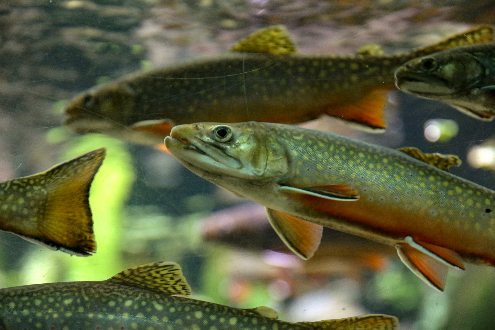
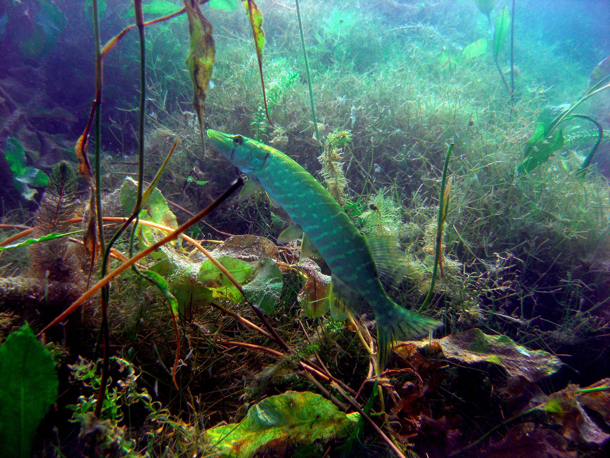
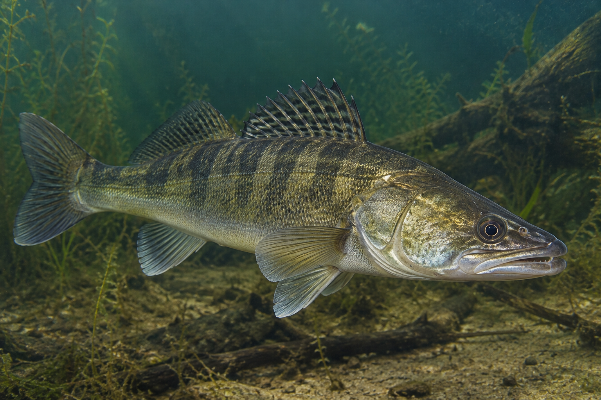
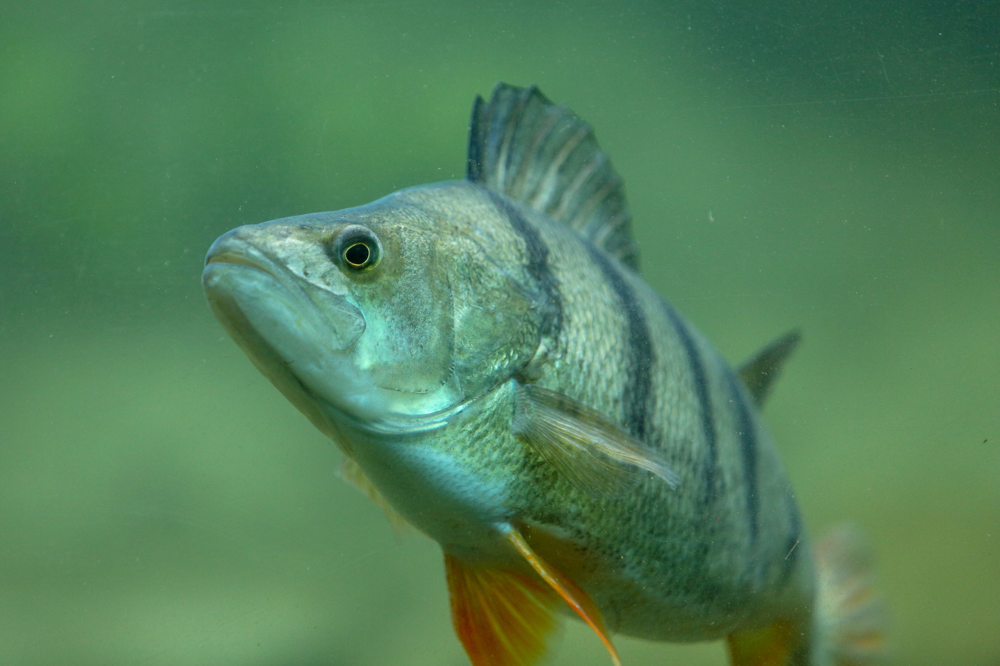
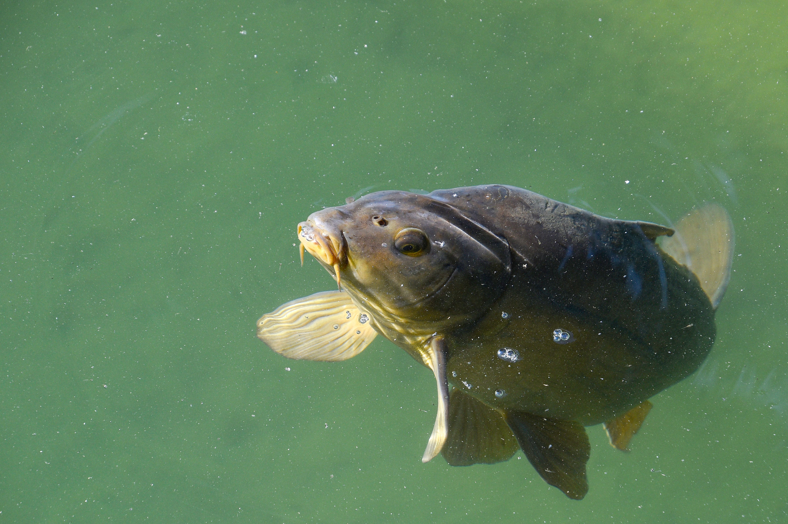

Fischarten der Schweiz
In den Schweizer Gewässern leben viele verschiedene Fischarten. Zu den bekannten Arten gehören Forellen, Hechte, Zander, Barsche und Karpfen. Jede Fischart hat ihren eigenen Lebensraum, ihr eigenes Verhalten und unterschiedliche Vorlieben bei der Nahrung.

Forellen
Forellen findet man häufig in kühlen, sauerstoffreichen Flüssen und Bächen. Sie ernähren sich unter anderem von kleinen Fischen und Wassertieren. Beim Angeln auf Forellen kommen verschiedene Methoden und Köder zum Einsatz.

Hechte
Hechte sind grosse Raubfische, die häufig in Seen und langsam fliessenden Gewässern vorkommen. Sie halten sich gerne in der Nähe von Pflanzen, Strukturen und anderen Versteckmöglichkeiten auf. Beim Spinnfischen kann gezielt auf Hechte geangelt werden.

Zander
Zander sind ebenfalls Raubfische. Sie leben vor allem in grösseren Seen und Flüssen. Zander sind häufig in tieferen Bereichen zu finden und reagieren auf verschiedene Köder und Angelmethoden.

Barsche
Barsche gehören zu den häufig vorkommenden Fischarten und können in vielen verschiedenen Gewässern gefunden werden. Sie leben oft in Gruppen und ernähren sich unter anderem von kleineren Fischen und anderen Wassertieren.

Karpfen
Karpfen halten sich häufig in ruhigeren und wärmeren Gewässerbereichen auf. Sie suchen ihre Nahrung oft am Gewässergrund. Beim Karpfenangeln werden deshalb häufig spezielle Köder und Ausrüstungen verwendet.
Wer gezielt auf eine bestimmte Fischart angeln möchte, sollte sich vorher über deren Lebensraum, Verhalten, Nahrung und geeignete Angelmethoden informieren. Auch die jeweiligen Schonzeiten und Mindestmasse müssen beachtet werden.